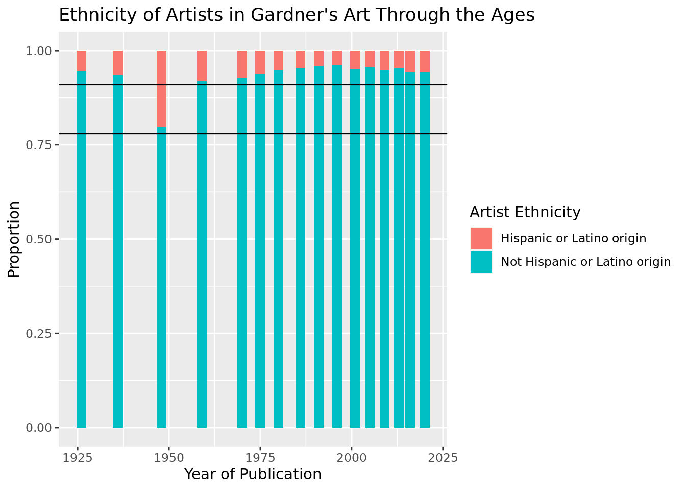
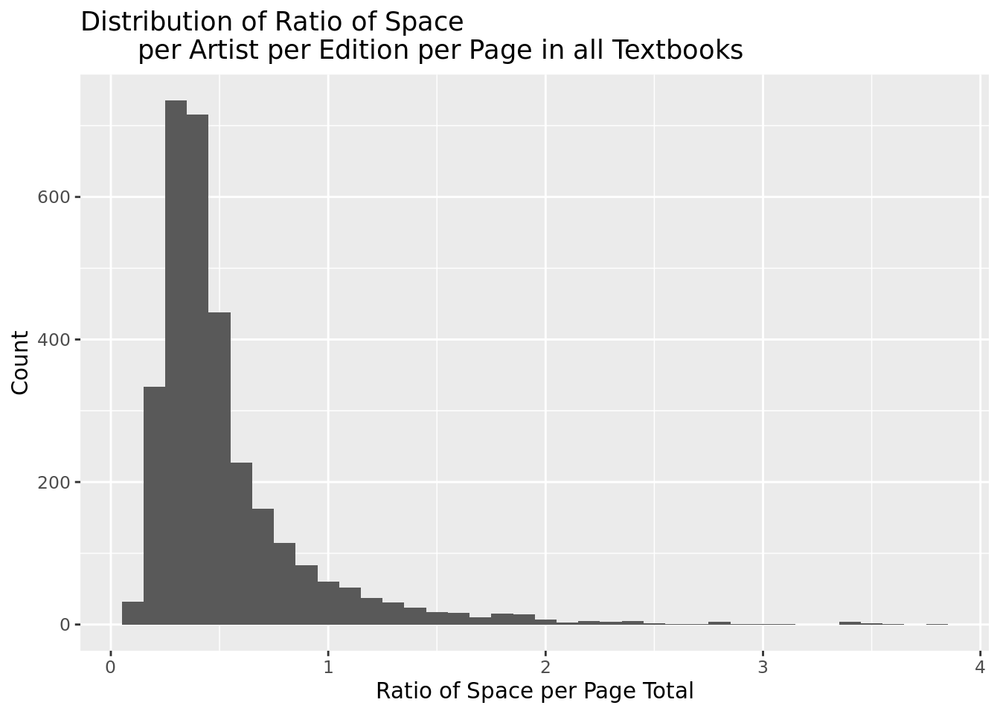
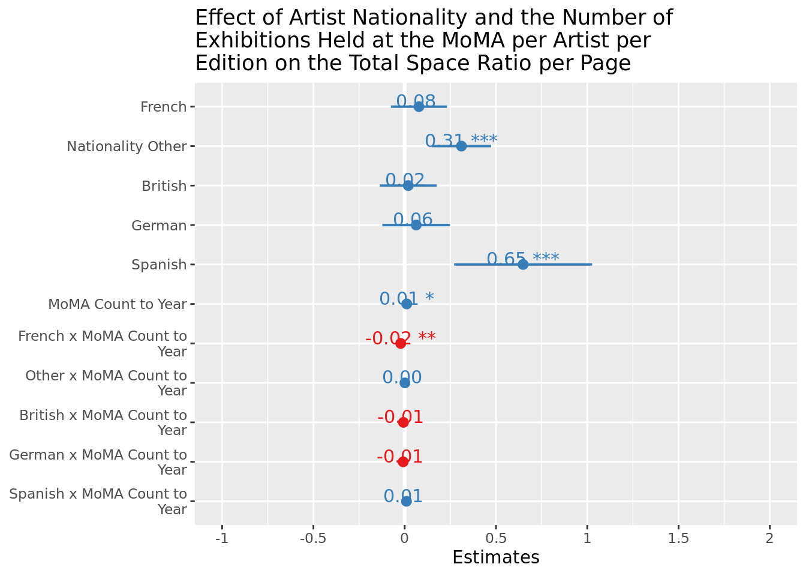
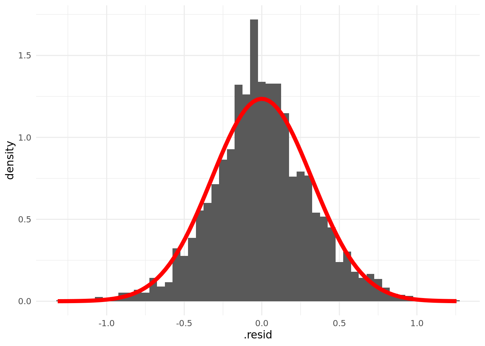
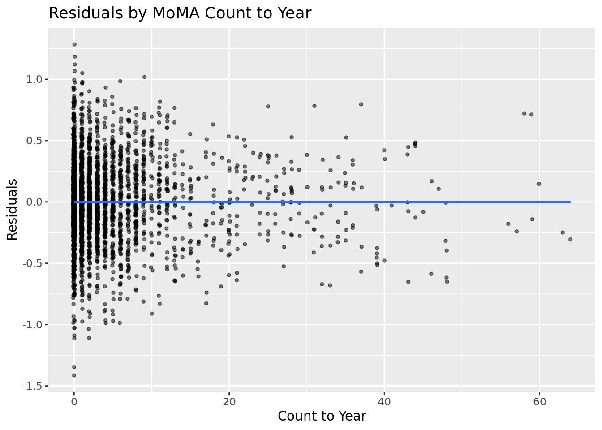

1 Quantifying Art Historical Narratives
1.1 Abstract
My project surveys the development of Janson’s History of Art across its eight editions as well as Gardner’s Art Through the Ages through its sixteen editions, looking particularly at the change in artist demographic through time. Additionally, this paper investigates which external variables such as artist gender, ethnicity, race, nationality, number of exhibitions at the Museum of Modern Art, and number of exhibitions at The Whitney if any, help predict the magnitude of an artist’s inclusion in art history survey texts. I conduct data analysis to assess the demographic representation of artists through editions of Janson’s History of Art and Gardner’s Art Through the Ages, a proxy for the art history survey. I compare artist demographics through editions of Janson and Gardner. My findings indicate that coverage of minority artists (defined as non-white and/or Hispanic or Latinx and/or female) increases across editions of Janson’s History of Art and Gardner’s Art Through the Ages, but remains negligible compared to white male non-Hispanic or Latinx artists. Moreover, in Janson’s History of Art through all editions, the percentage of artists who are white is 97.37%, the percentage of artists that are male is 89.99%, and the percentage of artists that are not Hispanic or Latinx is 95.82%. In Gardner’s Art Through the Ages, through all editions, the percentage of artists who are white is 90.02%, the percentage of artists that are male is 85.69%, and the percentage of artists that are not Hispanic or Latinx is 91.51%. Both texts display a narrative of the history of art as being predominantly white, male, non-Hispanic or Latinx. Regarding nationality, in Janson, 78.51% of the artists are American, British, French, German, and Spanish, which is very similar to Gardner’s 76.58% of those five same nationalities. I have chosen to run a linear mixed-effects model with a random effect of the artist’s name, to infer the magnitude of the space given to a particular artist divided by the area of the page of the given edition (total space ratio per page), in Janson’s History of Art and Gardner’s Art Through the Ages, using the potential predictor variables: Artist Race, Artist Gender, Artist Ethnicity, Artist Nationality, the count through time of the number of exhibitions an artist has at the MoMA, and the count through time of the number of exhibitions an artist has at The Whitney. The model that best explains the variance in the total space ratio per page per artist per edition uses artist nationality and the count through time of the number of exhibitions an artist has in the MoMA as well as the interaction between those two variables. With a log transformation applied to the outcome variable of the as it is heavily right-skewed, my linear mixed-effects model yields a conditional r squared of 53.23%. Such denotes that 53.23% of the variance of total space ratio per page given to an artist in a given edition can be explained by the artist’s nationality and the count through time of the number of exhibitions an artist has at the MoMA.
JEL Numbers: C80, Y10, Z11
Key Words: Cultural Economics, Art History, Statistics, Historiography, Data Collection Methodology, Linear Mixed-Effects Modeling.
Data Preparation:
ddf=“Satterthwaite”¶
Satterthwaite test, more flexible, looking directly at p-values - non-parametric test - uses different error term, similar to a two same t-test, similar to ANOVA - analysis of variance - checking between different groups -
Backward reduced random-effect table:
Eliminated npar logLik AIC LRT Df Pr(>Chisq)
<none> 22 -1407.2 2858.3
(1 | artist_name) 0 21 -2255.3 4552.6 1696.2 1 < 2.2e-16 ***
---
Signif. codes: 0 '***' 0.001 '**' 0.01 '*' 0.05 '.' 0.1 ' ' 1
Backward reduced fixed-effect table:
Degrees of freedom method: Satterthwaite
Eliminated Sum Sq Mean Sq NumDF
artist_race_nwi:moma_count_to_year 1 0.00575 0.00575 1
artist_ethnicity:whitney_count_to_year 2 0.00836 0.00836 1
artist_race_nwi:whitney_count_to_year 3 0.06087 0.06087 1
artist_race_nwi 4 0.01434 0.01434 1
artist_gender 5 0.08807 0.08807 1
artist_ethnicity:moma_count_to_year 6 0.09505 0.09505 1
artist_ethnicity 7 0.01452 0.01452 1
whitney_count_to_year 0 0.94957 0.94957 1
artist_nationality_other:moma_count_to_year 0 2.56307 0.51261 5
DenDF F value Pr(>F)
artist_race_nwi:moma_count_to_year 533.82 0.0499 0.8232618
artist_ethnicity:whitney_count_to_year 2174.81 0.0726 0.7876537
artist_race_nwi:whitney_count_to_year 497.70 0.5282 0.4677161
artist_race_nwi 484.81 0.1244 0.7244730
artist_gender 415.45 0.7640 0.3825716
artist_ethnicity:moma_count_to_year 675.27 0.8247 0.3641252
artist_ethnicity 486.16 0.1259 0.7228281
whitney_count_to_year 1091.60 8.2366 0.0041846 **
artist_nationality_other:moma_count_to_year 1425.16 4.4464 0.0005048 ***
---
Signif. codes: 0 '***' 0.001 '**' 0.01 '*' 0.05 '.' 0.1 ' ' 1
Model found:
log(space_ratio_per_page_total) ~ artist_nationality_other + moma_count_to_year + whitney_count_to_year + (1 | artist_name) + artist_nationality_other:moma_count_to_yearpick a handful of interest
visualization : confidence intervals for each on of the slopes
predictors on the y axis -
bar plots of the pvalues another option
nationality discourse for significance
log transformation on the y variable -
stepwise model selection
the multiple of the number of degrees of freedom used for the penalty. Only k = 2 gives the genuine AIC: k = log(n) is sometimes referred to as BIC or SBC.
Linear mixed model fit by maximum likelihood . t-tests use Satterthwaite's
method [lmerModLmerTest]
Formula: log(space_ratio_per_page_total) ~ artist_nationality_other +
moma_count_to_year + artist_nationality_other * moma_count_to_year +
(1 | artist_name)
Data: gardnerjanson_museums_mod
AIC BIC logLik deviance df.resid
2853.1 2937.6 -1412.5 2825.1 3090
Scaled residuals:
Min 1Q Median 3Q Max
-3.8692 -0.5597 -0.0344 0.5743 3.6926
Random effects:
Groups Name Variance Std.Dev.
artist_name (Intercept) 0.1105 0.3324
Residual 0.1156 0.3400
Number of obs: 3104, groups: artist_name, 394
Fixed effects:
Estimate Std. Error
(Intercept) -1.066e+00 6.950e-02
artist_nationality_otherAmerican 7.793e-02 7.843e-02
artist_nationality_otherFrench 3.108e-01 8.291e-02
artist_nationality_otherOther 1.954e-02 7.943e-02
artist_nationality_otherBritish 6.277e-02 9.446e-02
artist_nationality_otherSpanish 6.485e-01 1.928e-01
moma_count_to_year 1.101e-02 4.905e-03
artist_nationality_otherAmerican:moma_count_to_year -2.203e-02 7.874e-03
artist_nationality_otherFrench:moma_count_to_year 1.106e-03 5.939e-03
artist_nationality_otherOther:moma_count_to_year -6.692e-03 6.115e-03
artist_nationality_otherBritish:moma_count_to_year -8.244e-03 1.452e-02
artist_nationality_otherSpanish:moma_count_to_year 9.606e-03 7.324e-03
df t value Pr(>|t|)
(Intercept) 4.588e+02 -15.331 < 2e-16
artist_nationality_otherAmerican 4.651e+02 0.994 0.320904
artist_nationality_otherFrench 4.396e+02 3.748 0.000202
artist_nationality_otherOther 4.714e+02 0.246 0.805742
artist_nationality_otherBritish 4.403e+02 0.665 0.506703
artist_nationality_otherSpanish 3.713e+02 3.364 0.000847
moma_count_to_year 1.647e+03 2.245 0.024928
artist_nationality_otherAmerican:moma_count_to_year 1.125e+03 -2.798 0.005228
artist_nationality_otherFrench:moma_count_to_year 1.866e+03 0.186 0.852305
artist_nationality_otherOther:moma_count_to_year 1.325e+03 -1.094 0.274068
artist_nationality_otherBritish:moma_count_to_year 9.461e+02 -0.568 0.570410
artist_nationality_otherSpanish:moma_count_to_year 2.773e+03 1.312 0.189784
(Intercept) ***
artist_nationality_otherAmerican
artist_nationality_otherFrench ***
artist_nationality_otherOther
artist_nationality_otherBritish
artist_nationality_otherSpanish ***
moma_count_to_year *
artist_nationality_otherAmerican:moma_count_to_year **
artist_nationality_otherFrench:moma_count_to_year
artist_nationality_otherOther:moma_count_to_year
artist_nationality_otherBritish:moma_count_to_year
artist_nationality_otherSpanish:moma_count_to_year
---
Signif. codes: 0 '***' 0.001 '**' 0.01 '*' 0.05 '.' 0.1 ' ' 1
Correlation of Fixed Effects:
(Intr) art__A art__F art__O art__B art__S mm_c__ a__A:_ a__F:_
artst_ntn_A -0.886
artst_ntn_F -0.838 0.743
artst_ntn_O -0.875 0.775 0.734
artst_ntn_B -0.736 0.652 0.617 0.644
artst_ntn_S -0.361 0.320 0.302 0.316 0.265
mm_cnt_t_yr -0.311 0.276 0.261 0.272 0.229 0.112
arts__A:___ 0.194 -0.334 -0.163 -0.170 -0.143 -0.070 -0.623
arts__F:___ 0.257 -0.228 -0.294 -0.225 -0.189 -0.093 -0.826 0.514
arts__O:___ 0.250 -0.221 -0.209 -0.315 -0.184 -0.090 -0.802 0.500 0.662
arts__B:___ 0.105 -0.093 -0.088 -0.092 -0.289 -0.038 -0.338 0.210 0.279
arts__S:___ 0.208 -0.185 -0.175 -0.182 -0.153 -0.302 -0.670 0.417 0.553
a__O:_ a__B:_
artst_ntn_A
artst_ntn_F
artst_ntn_O
artst_ntn_B
artst_ntn_S
mm_cnt_t_yr
arts__A:___
arts__F:___
arts__O:___
arts__B:___ 0.271
arts__S:___ 0.537 0.2262 Introduction and Context
2.1 Inspiration for Research:
Heading into the second semester of my junior year, I scheduled a zoom meeting with my now undergraduate thesis advisor, Prof. Hans van Miegroet, to ask a few questions about my aspirations after college. He had been my professor for his course, “History of Art Markets,” a learning experience at Duke that has permanently altered my worldview. The meeting began with me expressing my enjoyment of the course, and the appreciation of the discussion of transparency in the buying and selling of art. I asked his opinion of whether I should stick to studying architectural history with hopes of going to architecture school, or pivot to do further research under him in his graduate course, “Arts and Markets” that I had enrolled in for that Spring. Towards the end of the meeting, he asked me what I found most interesting about art, to which I replied, “Ever since I took my first Art History course, I’ve always been curious as to why I am introduced to the works I am. Who is choosing what I study versus what I don’t study?” I explained to him. I had initially learned the story of art through Marilyn Stokstad’s, Art History my final year of high school. At the end of that school year, I inquired to my teacher, Carolyn Paczkowska, in a class discussion, “Why are we studying the works that we have?” The class discussed gatekeepers of art and information and later ended in the conclusion of uncertainty. Prof. van Miegroet looked at me through the computer screen and stated I had found my research question for my Undergraduate Honors Thesis, that I had found my why.
My research began solely looking at how art history textbooks changed through time, then developed into looking at using a linear mixed-effect model with a log transformation on my outcome variable to infer which external variables would if at all work to predict the magnitude of space (of text and of the figure of their work or works) given to an artist in a given book.
2.2 Why Gardner’s Art Through the Ages:
2.2.2 Literature Review:
(Discourse of dominance through time of the text, find and add sources and if available sales information through time)
REACH OUT FOR SALES DATA TO PUBLISHERS
Britannica
- The lack of a comprehensive single-volume textbook on art history prompted Gardner to write one herself, and the resulting Art Through the Ages (1926) far surpassed other available works in readability, breadth of coverage, and wealth of illustration. It remained a widely used text for decades. In 1932 she published Understanding the Arts, aimed at a wide general audience. A second edition of Art Through the Ages, greatly expanded, appeared in 1936; the first two editions sold more than 260,000 copies. Gardner had been named an assistant professor in the Art Institute school in 1929, and in 1933 she became a professor and head of the department of art history. She retired from the Art Institute school in 1943. Despite declining health she managed to complete work on the manuscript of a third edition of Art Through the Ages (published in 1948).
Sources Found to Looking Into:
- Franciscono, Marcel.
- “History, Textbooks, and Art: Reflections on a Half Century of Helen Gardner’s”Art through the Ages”.” Critical Inquiry 4 (2) (Winter): 285. https://login.proxy.lib.duke.edu/login?u rl=https://www.proquest.com/scholarly-journals/history-textbooks-art-reflections-on-half-century/docview/1297337757/se-2?a ccountid=10598.
- Jaffee, Barbara. “9.”Gardner” Variety Formalism: Helen Gardner and Art through the Ages” In Partisan Canons edited by Anna Brzyski, 203-224. New York, USA: Duke University Press, 2007. https://doi.org/10.1515/9780822390374-010.
Table 1: Edition Number, Year of Publication, Title, Authorship, and Publisher Over Time of All Cataloged Editions of Gardner’s Art Through the Ages.
| Edition | Year of Publication | Author(s) | Title | Publisher (as listed per Edition) |
|---|---|---|---|---|
| 1 | 1926 | Helen Gardner | Art Through the Ages; An Introduction to Its History and Significance | New York, Brace, Harcourt |
| 2 | 1936 | Helen Gardner | Art Through the Ages; An Introduction to Its History and Significance | New York, Brace, Harcourt |
| 3 | 1948 | Helen Gardner | Art Through the Ages | New York, Brace, Harcourt |
| 4 | 1959 | Helen Gardner; revised by Sumner M. Crosby and the Dept. of the History of Art, Yale University | Art Through the Ages | New York, Harcourt, Brace |
| 5 | 1970 | Revised by Horst de la Croix, Richard G. Tansey | Gardner’s Art Through the Ages | New York, Harcourt, Brace |
| 6 | 1975 | Helen Gardner; revised by Horst de la Croix, Richard G. Tansey | Gardner’s Art Through the Ages | New York: Harcourt Brace Jovanovich |
| 7 | 1980 | Helen Gardner; revised by Horst de la Croix, Richard G. Tansey | Gardner’s Art Through the Ages | Harcourt Brace Jovanovich, New York |
| 8 | 1986 | Horst de la Croix, Richard G. Tansey | Gardner’s Art Through the Ages | Harcourt Brace Jovanovich, San Diego, CA |
| 9 | 1991 | Horst de la Croix, Richard G. Tansey, Diane Kirkpatrick | Gardner’s Art Through the Ages | San Diego: Harcourt Brace Jovanovich |
| 10 | 1996 | Richard G. Tansey, Fred S. Kleiner | Gardner’s Art Through the Ages | Fort Worth, TX: Harcourt Brace |
| 11 | 2001 | Fred S. Kleiner, Christin J. Mamiya, Richard G. Tansey | Gardner’s Art Through the Ages | Fort Worth TX: Harcourt College Publishers |
| 12 | 2005 | Fred S. Kleiner, Christin J. Mamiya | Gardner’s Art Through the Ages | Thomson/Wadsworth, Belmont, CA |
| 13 | 2009 | Fred S. Kleiner | Gardner’s Art Through the Ages: A Global History | Boston, Thomson/Wadsworth |
| 14 | 2013 | Fred S. Kleiner | Gardner’s Art Through the Ages: A Global History | Australia ; United States : Wadsworth, Cengage Learning |
| 15 | 2016 | Fred S. Kleiner | Gardner’s Art Through the Ages: A Global History | Boston, MA : Cengage Learning |
| 16 | 2020 | Fred S. Kleiner | Gardner’s Art Through the Ages: A Global History | Boston, MA, US : Cengage Learning |
Table 4: Authors of Gardner’s Art Through the Ages: NEEDS TO BE ADDED
| Author Name | Edition Number (Year) | Description |
|---|---|---|
| Sumner McKnight Crosby (1909-1982) | 4 (1959) | Sumner McKnight Crosby was an American Medievalist architectural historian. He was the principal scholar of St-Denis and chair of the Department of Art History, Yale University, 1947-1953.1 |
| Horst de la Croix | 5 (1970), 6 (1975), 7 (1980), 8 (1986), 9 (1991) | |
| Richard G. Tansey | 5 (1970), 6 (1975), 7 (1980), 8 (1986), 9 (1991), 10 (1995) | |
| Diane Kirkpatrick | 9 (1991) | |
| Fred S. Kleiner | 10 (1995), 11 (2001), 12 (2005), 13 (2009), 14 (2013), 15 (2016), 16 (2020) | |
| Christin J. Mamiya | 11 (2001), 12 (2005) |
2.3 Why Janson’s History of Art:
Such a text is claimed to be the most influential art history survey through time by myriad art historians such as Jeffery Wiedman, Zoë Ingalls, John Russell, Alexandra Peers, Elizabeth Sears and Charlotte Schoell-Glass to name a few. Alexandra Peers in her publication for ARTnews.com in February of 2006, claims that “it was Janson who, more than any other art historian, pioneers the ‘in and out’ celebrity model of art history. There were artists who matter, he argued, and those who didn’t.”2 Janson’s formation of his history of art is not only arguably the most dominant art history survey over time, but also he holds a reputation of being a gatekeeper of art history. He states at the end of his introduction in the first and second editions that after having read his text, one “shall have joined the active minority that participates directly in shaping the course of art in our time.”3 He recognizes his role as an individual who shapes the narrative of the history of art, while convincing the reader that after having read his text, one has the agency to be a gatekeeper alongside him . Such agency is only granted once one understands his digestion of the most important works and artists through time .
It would be most comprehensive if we were to have access to the total number of sales per edition of Janson’s History of Art, to use as tangible data to show the relevance and importance of the text through time. Both publishers, Harry N. Abrams and Prentice-Hall (now Pearson Prentice-Hall) have declined sharing sales information in the aggregate. By leafing through various scholarly publications, there is imperfect data of sale information worth noting when discussing the dominance of Janson’s History of Art through time. The text was at its height of sales between when it was initially released in 1962 through H. W. “Peter” Janson’s death in 1982 (refer to Table 1 for complete information of each edition). Art historian, Patricia Hills cites in her publication in Artforum, “in 1973 the Janson text had 46% of the market, while Gardner’s 5th edition had 24%, followed by Gombrich’s, 8.5%, Cleaver with 3% and miscellaneous ‘other’ with 18.5%.”4 At the time such a report had been made, the first edition (1962), the first edition revised and enlarged (1969) had been released. Additionally, it was written by John Russell of the New York Times in October of 1982 that “well over two million copies have been sold.”5 Russell does not specify whether these sales numbers are solely the first edition of Janson’s History of Art, or the first edition as well as the first edition revised and enlarged and the second edition (1977) . He also added that the text had been “translated in 14 languages and is widely regarded as both an essential teaching instrument and a book that can be read and looked at with continuous enjoyment.”6 Here, Russell perpetuates the significance of Janson’s survey, as well as providing information about the breadth of Janson’s text, reaching more than solely English-reading audience s.
Conversely, Zoë Ingalls in a publication in August of 1995 discussing Janson’s relevance through time, cites that “the first edition sold more than a million copies.”7 Though there are informational discrepancies, it is clear that Janson’s History of Art was prolific as a survey text of art for over 20 years. The narrative remained significant from the third (1986) through the fifth edition (1995), which were all revised by Anthony “Tony” F. Janson, son of Peter and Dora Jane. Ingalls states that “the fourth edition, published in 1991, sold 21,000 copies the first year and an average of 11,000 copies a year in the past four years. The new fifth edition, has sold more than 13,000 copies since its March release.”8 She continues, “Although its sales have been eclipsed over the last 10 years by another perennial favorite, R.H. Gardner’s Art Through the Ages, Janson is still the standard in many people’s minds.”9 Notably, she does not mention any total sales information about Gardner’s survey text, just that over the past decade (1985-1995), its sales trumped that of Janson’ s.
After the sixth edition (2001) and the sixth edition revised (2004) the last with authorship by Tony Janson, Harry N. Abrams and Prentice Hall were unsatisfied by the total sales, as well as the overall structure and content of the text as they were criticized for having lost touch with young readers.10 At the same moment, Harry N. Abrams sold all rights to the newly formed Pearson Prentice Hall, who recruited new authorship of six various art historians across the United States: Penelope J. E. Davies, Walter B. Denny, Frima Fox Hofrichter, Joseph Jacobs, Ann M. Roberts, and David L. Simon (refer to Table 2). Such change was received negatively by art historians, which is reflected in the text’s further decline in sales. 11 It has been estimated by Bookauthority.com (a cite whose source for this information is very unclear) that the eighth edition revised, published in 2015 has had 2,000 total copies sold, while competing art historical narratives such as Marilyn Stokstad and Micheal W. Cothren’s History of Art Vol . 1 has had an estimated 10,000 copies sold since its release in 2017 .12 Such has left Janson’s History of Art as a minor player in art historical narratives today.
Table 2: Edition Number, Year of Publication, Title, Authorship, and Publisher Over Time of All Cataloged Editions of Janson’s History of Art.
| Edition Number | Year of Publication | Authors | Title | Publisher (as listed per Edition)13 |
|---|---|---|---|---|
| 1 | 196314 | H.W. Janson with Dora Jane Janson15 | History of Art: A Survey of the Major Visual Arts from the Dawn of History to the Present Day | Harry N. Abrams, Inc., New York |
| 1 (Revised and Enlarged) | 1969 | H. W. Janson with Dora Jane Janson | History of Art: A Survey of the Major Visual Arts from the Dawn of History to the Present Day | Prentice-Hall Inc., Englewood Cliffs, New Jersey and Harry N. Abrams, Inc., New York. |
| 2 | 1977 | H. W. Janson with Dora Jane Janson | History of Art: A Survey of the Major Visual Arts from the Dawn of History to the Present Day | Harry N. Abrams, Inc., New York. |
| 3 | 1986 | H. W. Janson; Revised and Expanded by Anthony F. Janson | History of Art | Harry N. Abrams, Inc., New York and Prentice-Hall Inc., Englewood Cliffs, New Jersey. |
| 4 | 1991 | H. W. Janson; Revised and Expanded by Anthony F. Janson | History of Art | Harry N. Abrams, Inc., New York. |
| 5 | 1995 | H. W. Janson; Revised and Expanded by Anthony F. Janson | History of Art | Harry N. Abrams, Inc., New York.
|
| 6 | 2001 | H. W. Janson and Anthony F. Janson | History of Art | Harry N. Abrams, Inc., New York.
|
| 7 | 2007 | Penelope J. E. Davies, Walter B. Denny, Frima Fox Hofrichter, Joseph Jacobs, Ann M. Roberts, David L. Simon | Janson’s History of Art: The Western Tradition | Pearson Prentice Hall, Upper Saddle River, New Jersey. |
| 8 | 2011 | Penelope J. E. Davies, Walter B. Denny, Frima Fox Hofrichter, Joseph Jacobs, Ann M. Roberts, David L. Simon | Janson’s History of Art: The Western Tradition | Pearson Prentice Hall, Upper Saddle River, New Jersey. |
2.3.2 Literature Review:
Many are Culled but Few are Chosen: Janson’s History of Art, Its Reception, Emulators, Legacy, and Current Demise
The publication by art historian Jeffrey Weidman, released in January, 2007 in the Journal of Scholarly Publishing begins by reviewing in detail the lineage of English-language art history surveys in America, and the Jansons’ text therein; discusses in detail the various reviews of the Jansons’ and other survey texts, namely Helen Gardner’s Art Through the Ages, and Marilyn Stokstad et al.’s Art History.20 He concludes that Janson’s History of Art functioned as the dominant art history survey through time. Secondly, Weidman discusses the changes of Janson’s History of Art between the sixth edition revised, the last edition written by Peter and Tony Janson, and the seventh edition written by the six various art historians (Table 2). He believes that the seventh edition is a disgrace to Janson’s text, and the beauty of Janson’s analytically writing has been completely stripped in the seventh edition. He also discusses, yet only through a handful of examples, artists and works which were taken out as well as added between the sixth edition revised and the seventh (for a comprehensive understanding of artists taken out and added through time refer to Fig. __). Notably, such publication does not discuss data in the aggregate when looking at who is included and excluded, and rather only looks in detail at the changes between the sixth edition revised and the seventh edition.
Revising Art History’s Big Book: Who’s In and Who Comes Out?
This article published by Randy Kennedy in March of 2006 in the New York Times, also discusses the change between the sixth edition revised and the seventh edition of Janson’s History of Art.21 Kennedy looks at only a few artists and works who leave and are added, particularly baffled by the exclusion of James Abbot McNeill Whistler’s Arrangement in Black and Gray: The Artist’s Mother. He interviews Sarah Touburg, an editor of the seventh edition who claims that upwards of 25% of the book’s content had been altered between the sixth edition revised and the seventh edition. Interestingly, Kennedy claims that the new book adds more women and it uses art much more as a way to discuss race, class and gender. Such an observation is not reflected in our data, which can be seen in figures __, ___, and ___. This publication also discusses the dominance and influence that Janson’s History of Art has had over time, as well as its decline as the best-selling art survey in recent years. Kennedy states that a shift in authorship was done in efforts to revitalize Janson’s relevance to younger audiences. Though this publication discusses the change between two editions, Kennedy does not do so in the aggregate.
Discussions and Depictions of Women in H. W. Janson’s History of Art, Fourth Edition
Art historian Paul E. Bolin discusses gender inequality through the first four editions of Janson’s History of Art.22 He states that a primary criticism of Janson’s text is its lack of attention given to the importance of work of women artists. The first two editions did not include any women, then there was an influx of female artists when Tony Janson claimed primary authorship for the publication of the third edition in 1986. Bolin argues that even with the edition of female artists in the third and fourth editions, there is still not enough representation and that additionally the fashion in which Tony discusses female artists is apologetic and at times problematic. Bolin uses simple statistics in his discourse, having counted a total of 9 out of the 28 new artists added to the fourth edition as female. Bolin does not discuss racial discrimination, nor does he use complete data in the aggregate when looking gender discrimination.
3 Significance of Research:
As far as I am aware, there has not been research done in the aggregate, quantitatively analyzing the change over time specifically regarding artist demographic in Janson’s History of Art nor Gardner’s Art Through the Ages. My research is significant as it efficiently shows the gaps of representation in terms of gender, nationality, race, and ethnicity that have not been deeply touched on by previous scholars. As mentioned in my literature review of publications that discuss Gardner’s Art Through the Ages, the closest research I have found to my own was published by The University of Chicago Press Journals in 2020 in which two professors and library assistant out of Purdue University, randomly selected and cataloged information from the first, fifth, twelfth and sixteenth edition. They were focused on how the length of the book changes through time, the type of image changed through time, how the percent of color images change through time, and how the number of suggested readings changes through time. My research has more breadth, as I scraped information from all 16 editions of Gardner’s Art Through the Ages, as well as Janson’s History of Art and working less with how the book itself was changing, but more so how the artist’s included changes through time.
Secondly, my research looks at how the area given to particular artists changes through time and which, if any, external variables can help account for the variance of such. As mentioned in my abstract, I use a linear mixed-effects model with a random effect of the artist’s name, to infer the magnitude of the space given to a particular artist divided by the area of the page of the given edition (total space ratio per page), in Janson’s History of Art and Gardner’s Art Through the Ages, using the potential predictor variables: Artist Race, Artist Gender, Artist Ethnicity, Artist Nationality, the count through time of the number of exhibitions an artist has at the MoMA, and the count through time of the number of exhibitions an artist has at The Whitney. The model that best explains the variance in the total space ratio per page per artist per edition uses artist nationality and the count through time of the number of exhibitions an artist has in the MoMA as well as the interaction between those two variables. With a log transformation applied to the outcome variable of the as it is heavily right-skewed, my linear mixed-effects model yields a conditional r squared of 53.23%. Such denotes that 53.23% of the variance of total space ratio per page given to an artist in a given edition can be explained by the artist’s nationality and the count through time of the number of exhibitions an artist has at the MoMA. This type of statistical analysis as far as I am aware has not been done in regards to looking at how art historical survey texts evolve. My research works to explain how the authors of Janson’s History of Art and Gardner’s Art Through the Ages, operate while choosing which artists are given any particular amount of space in their publications.
4 Research Questions:
What are the demographics (Race, Gender, Ethnicity, Nationality) of artists included in each edition of Janson’s History of Art (from 1962-2011) and Gardner’s Art Through the Ages (from 1926-2020) looking at two-dimensional works after c. 1750?
Hypothesis: Janson’s History of Art and Gardner’s Art Through the Ages will include more female, nonwhite, Hispanic or Latinx artists over time; however, these artists will still be dramatically underrepresented compared to white male artists. Moreover, race and ethnicity will be more of a limiting factor than gender.
Which variables (gender, race, ethnicity, nationality, number of exhibitions at the MoMA or The Whitney) if any, predict the magnitude of an artist’s inclusion in art history survey texts (Janson’s History of Art and Gardner’s Art Through the Ages)?
Hypothesis: I hypothesize demographic information per artist will play a large role in accounting for the total variance in
space_ratio_per_page_total. The type of race, gender, nationality, and ethnicity of an artist in theory highly impacts how much they are highlighted and discussed in introductory art history texts. Additionally, I hypothesize that if a given artist has many exhibitions in the MoMA or The Whitney, such would additionally account for variance in the outcome variablespace_ratio_per_page. The notion behind such a hypothesis is that if an artist is being put on exhibition, they are likely to be discussed more in introductory art history texts.
5 Methodology:
5.1 Data Collection:
5.1.1 Textbooks:
Scope: I collected data from 25 different books. I cataloged 9 different books of Janson’s History of Art, spanning from 1963 to 2011. Additionally, I cataloged 16 different books of Gardner’s Art Through the Ages, spanning from 1929 to 2020. I used the particular scope of works produced after c. 1750 that were two-dimensional. This scope allowed me to collect information more quickly to understand how the books were changing over time. Across all 25 books, there are a total of 3162 observations, which is the sum of the count of artists in every book. In the finalized, gardnerjanson_museums data set, there are 14 different variables cataloged (for further information about each variable, reference the Data Dictionary). There are a total of 414 unique artists.
Outcome variable:
space_ratio_per_page_total = I measured with a ruler with centimeters, the length and width of text per work per artist. If the area of text was not a rectangle, I additionally collected the length and width of any extra text. I then used excel to calculate the total area of the text per work per artist. Then I additionally measured the length and width of the figure in the book of the work itself. Again, using excel, I calculated the area of the figure of the work. I then added together the area of figure of a work with the area of text written about the work, to create a variable of total space given to a work. In order to achieve a ratio between total space and the area of a page is in a respective book, as they are inconsistent, I divided the total area of a page from a respective book with the total space given to a work by an artist in a respective book.
Demographic variables:
artist_nationality = I recorded the nationality of the artist as listed by the text. In the case the nationality of the artist was not listed, I would do a quick google search to further research their nationality. If I couldn’t find their nationality, I listed such as N/A.
artist_gender = I recorded the gender of the artist as listed by the text. In the case the gender of the artist was not listed, I would do a quick google search to further research their gender. If I couldn’t find their gender, I listed such as N/A.
artist_race = I recorded the race of the artist as listed by the text. I categorized race based on the guidelines of the US Census.23 In the case the race of the artist was not listed, I would do a quick google search to further research their race. If I couldn’t find their race, I listed such as N/A.
artist_ethnicity = I recorded the ethnicity of the artist as listed by the text. Similarly to race, I categorized ethnicity based on the guidelines of the US Census.24 In the case the ethnicity of the artist was not listed, I would do a quick google search to further research their ethnicity. If I couldn’t find their ethnicity, I listed such as N/A.
Identifying Variables:
artist_name = The name of the artist as listed by the respective book. At times, each book would spell names slightly differently, so I standardized names across editions as well as across museum exhibition data for the MoMA and The Whitney.
year = I recorded the year of publication of each book.
edition_number = I recorded the edition number of each book.
book = I recorded which book, either Gardner or Janson, the work was mentioned.
Selection: As argued in the Introduction and Context, Janson’s History of Art and Gardner’s Art Through the Ages, are the two most renowned and significant art history introductory texts through roughly the last century.
Limitations: I have limited my data collecting in Janson’s History of Art and Gardner’s Art Through the Ages to only including two-dimensional art made after c. 1750. This omits sculpture and architecture and how the story of art changes from the beginning of time to c. 1750. I did such as I am most interested in how the diversity of artists changes through editions, and because it only took roughly 1/5 of the time to catalog as I was only cataloging roughly 1/5 of each book. Additionally, two-dimensional works are more frequently included in museum exhibitions spaces than works of sculpture and architecture. My research would be more robust and complete had I cataloged every work in every edition. I am fully aware of this limitation, yet I believe my conclusions are significant within my scope.
5.1.2 Museum Data:
Scope: My second research question is looking at if / how an artist’s inclusion in museums exhibitions impacts the amount of total area an artist is given in a particular book. I initially began this research as a group project for a class titled, “Art Markets.” In order to collect information regarding museum exhibitions, my colleague, David Smoot (’21), web scraped the MoMA’s website for the entirety of its catalog history from when its doors first opened in 1929 through the date he scraped the MoMA’s website which was March 14th, 2021. He did the same thing with The Whitney’s website and web scraped their exhibition history from 1933 through when he scraped the website, March 30th, 2021. There was a total of 10,630 observations in the MoMA data set and 13,736 at The Whitney. An observation is an appearance of an artist in an exhibition.
Selection: The Whitney and the MoMA were chosen as they are located in New York City, arguably the center of the art world as we know it, and because of the relative accessibility of historic exhibition data.
Limitations: The inclusion of more museums, both domestically and internationally would lend the museum data sets greater power to provide context, and an independent metric for the importance of the exhibition, such as press coverage, would be more useful as a comparison to the space_ratio_per_page_total in the textbook than the number of exhibitions. Also, The Whitney appears to only list their annual shows on their website prior to 1997, so only the MoMA has complete data.
I finished my data collection process with four separate data sets. I had one in which I collected demographic and total space information for the nine books of Janson’s History of Art, and a second doing the same for the sixteen books of Gardner’s Art Through the Ages. I then had a data set of the MoMA’s exhibition history from 1929-March 14th, 2021 and lastly a data set of The Whitney’s exhibition history from 1933-March 30th, 2021.
5.2 Data Preparation:
In order to create one data set, gardnerjanson_museums, I went through a number of steps to join data from all four in R Studio. I began with binding the rows from the Janson data set and the Gardner data set. I then created a new variable artist_unique_id in which I assigned a number to each artist in alphabetical order across all editions of both books. In some cases, there are artists with multiple works cataloged in a particular edition. I was able to sum the total space per work such that an artist’s name would only show up once per edition with a total_space_per_page_total value in centimeters squared.
Pivoting to joining The Whitney’s catalog history and the MoMA’s catalog history with the data set I just created with both Janson and Gardner observations, I had to create a variable called whitney_count_to_year and moma_count_to_year respectively. This is because as the publication year of books changes through time, the amount of exhibitions that are given to an artist has the possibility to change through time as well.
whitney_count_to_year = The count of exhibitions held by The Whitney of a particular artist at a particular moment of time, as highlighted by year.
moma_count_to_year = The count of exhibitions held by the Museum of Modern Art (MoMA) of a particular artist at a particular moment of time, as highlighted by year.
5.3 Model Selection:
5.3.1 Data Preparation for Modeling Purposes:
In order to prepare my data further for the purposes of regression, I had to re-categorize the variable of artist_nationality and artist_race. Firstly, since there are myriad nationalities recorded through all 25 books, I had to condense artist_nationality to artist_nationality_other such that I would only receive five varying betas rather than more than thirty.
artist_nationality_other = The nationality of the artist. Of the total count of artists through all editions of Janson’s History of Art and Gardner’s Art Through the Ages, 77.32% account for French, Spanish, British, American and German. Therefore, the categorical strings of this variable are French, Spanish, British, American, German and Other.
In regard to artist_race, there are so few observations of artists who are non-white that when running a regression with a categorizing non-white even further into their respective cataloged races with only a handful of data points is not statistically sufficient nor informative. The buckets of information at the respective race-level were too small and therefore rank deficient. Therefore I created the variable artist_race_nwi.
artist_race_nwi = The non-white indicator for artist race, meaning if an artist’s race is denoted as either white or non-white.
Lastly, I releveled my data such that the baseline demographic of artist reflects the most common category across artist_race, artist_ethnicity, artist_nationality and artist_gender respectively which is a white non-Latinx or Hispanic French man.
5.3.2 Linear Mixed-Effects Model:
We chose to use a linear mixed-effects model as the data contains a random effect at the artist level as multiple observations in the data can be by the same artist. Using a linear mixed effects model with artist name as the random effect eliminates the dependence between observations of the same artist, therefore allowing independence to be satisfied for our model. Additionally, we chose to log transform the outcome variable, the total space ratio per page is extremely right-skewed. Performing the log transformation allows for the residuals to have constant variance (homoscedasticity). In regards to choosing the combination of both main fixed effects and interaction fixed effects, we used a step-wise model selection methodology.
Satterthwaite test, more flexible, looking directly at p-values - non-parametric test - uses different error term, similar to a two same t-test, similar to ANOVA - analysis of variance - checking between different groups -
6 Exploratory Data Analysis: Gardner’s Art Through the Ages and Janson’s History of Art Through Editions
6.1 Count Through Editions:
![There are some respective lulls and peaks through time, as in the fourth edition published in 1959, there are 87 works, while in the fifth published in 1970, there is a significant regression to 69 works. Such trend is evident as well in the seventh edition published in 1980, which has 115 works, while the eighth published in 1986 regresses to 109 works. There is yet another peak at edition eleven published in 2001, with 170 works. There is then a lull over the course of two editions, ending with edition thirteen published in 2009 having 164 works.](Chapter1_files/figure-html/gardnercountthroughtime-1.png)
# A tibble: 164 × 14
# Groups: artist_name [164]
artist_name edition_number year artist_national… artist_national…
<chr> <dbl> <dbl> <chr> <chr>
1 Aaron Douglas 13 2009 American American
2 Adolphe William Bougu… 13 2009 French French
3 Albert Bierstadt 13 2009 German-American Other
4 Alfred Stieglitz 13 2009 American American
5 Ana Mendieta 13 2009 Cuban-American Other
6 André Derain 13 2009 French French
7 Andy Warhol 13 2009 American American
8 Angelica Kauffmann 13 2009 Swiss Other
9 Anne Louis Girodet Tr… 13 2009 French French
10 Anselm Kiefer 13 2009 German German
# … with 154 more rows, and 9 more variables: artist_gender <chr>,
# artist_race <chr>, artist_ethnicity <chr>, book <chr>,
# space_ratio_per_page_total <dbl>, artist_unique_id <int>,
# moma_count_to_year <dbl>, whitney_count_to_year <dbl>,
# artist_race_nwi <chr>The shape of the overall count of works by artists in Gardner’s Art Through the Ages is heavily left-skewed, multimodal, and asymmetrical. Such highlights how through time, more works are, on average, continually added to Gardner’s Art Through the Ages that are two-dimensional and made after c. 1750. The first edition, published in 1926 by Helen Gardner, only has a a total of 21 works. Edition 15, published in 2016 as well as edition 16, published in 2020, have 182 works respectively, which is the maximum amount of works through all editions.

# A tibble: 153 × 14
# Groups: artist_name [153]
artist_name edition_number year artist_national… artist_national…
<chr> <dbl> <dbl> <chr> <chr>
1 Adolphe William Bougu… 8 2011 French French
2 Albert Pinkham Ryder 8 2011 American American
3 Alexander Rodchenko 8 2011 Russian Other
4 Alfred Stieglitz 8 2011 American American
5 Ando Hiroshige 8 2011 Japanese Other
6 André Derain 8 2011 French French
7 Andy Warhol 8 2011 American American
8 Angelica Kauffmann 8 2011 Swiss Other
9 Anne Louis Girodet Tr… 8 2011 French French
10 Anselm Kiefer 8 2011 German German
# … with 143 more rows, and 9 more variables: artist_gender <chr>,
# artist_race <chr>, artist_ethnicity <chr>, book <chr>,
# space_ratio_per_page_total <dbl>, artist_unique_id <int>,
# moma_count_to_year <dbl>, whitney_count_to_year <dbl>,
# artist_race_nwi <chr>The shape of the overall count of works by artists in Janson’s History of Art is left-skewed, unimodal and asymmetrical. Such highlights how through time, more works are added to Janson’s History of Art that are two-dimensional and made after c. 1750. There is then a drop-off of works included in the seventh (published in 2007 with 163 works) and eighth (published in 2011 with 153 works) editions, when new authorship took over. Within edition five (published 1995) and edition six (published in 2001), both written by Anthony Janson, there are the same number of works, the maximum amount included in the text throughout time, 185, as compared to the count of works in the first edition, first printing, 62, and first edition, second printing, 76.
6.2 Gender Through Editions:

The breakdown of artists’ gender through editions of Janson’s History of Art, has never dipped below 86% male, which is what the horizontal line denotes. Additionally, this visualization shows that the first two editions, (the first three books cataloged: edition 1, first printing, edition 1, second printing, and edition 2), that were written my H. W. Janson and Dora Jane Janson, contains no women. Anthony Janson, who took over authorship for the third edition in 1986, began including women. Notably, he was extremely proud of himself for diversifying his family’s art history survey text.
The overall percentage of male artists through all books of Janson’s History of Art is 89.99%.

The breakdown of artists’ gender through editions of Gardner’s Art Through the Ages, is marginally more diverse in regard to gender, as the lowest threshold of male artists is just above 81%, which is denoted by the horizontal line. Additionally, this visualization shows that the first edition in 1926 contains no female artists in our scope, but that starting in the second edition in 1936, Helen Gardner included female artists.
The overall percentage of male artists through all books of Gardner’s Art Through the Ages is 85.69%, roughly a 4.5% increase in regard to gender diversity as compared to Janson’s History of Art.
6.3 Race Through Editions:

Pivoting to looking at race diversity in Janson’s History of Art through time, unsurprisingly, the three cataloged books, first two editions written by H. W. Janson and Dora Jane Janson, there were only white artists included. When their son took over authorship, he included a handful of black artists, then in the fifth edition, he added an artist by the name Kay Walkingstick, who is a Native American woman. She was included through the sixth edition then removed when the group of six professors took over. Interestingly, the black artists who are included have frequent turnover. In the seventh and eighth editions, there was an Asian artist introduced, Ando Hiroshige, a Japanese male painter who was used as a reference when discussing impressionist art.
The overall percentage of white artists through all editions of Janson’s History of Art is 97.37%.
ADD FIGURE OF WORK USED IN JANSON FOR ANDO HIROSHIGE
Figure 1: Kay WalkingStick, On The Edge, 1989. Acrylic and wax and oil on canvas, 81 x 162 ½ cm. Private collection.


Gardner’s Art Through the Age’s began with including more than just white artists, with the inclusion of Asian artists in the first edition. The most diverse a single edition has gotten thus far is just under 15% being non-white. Interestingly enough, the two editions that are least racially diverse are the seventh and eighth editions which were published in 1980 and 1986 respectively. There is a significant jump in black representation in the eleventh edition, as well as other non-white artists as the percentage of non-white artists goes from just under 4% in the tenth (1996) to close to 14% in the eleventh (2001).
The overall percentage of white artists through all editions of Gardner’s Art Through the Ages is 90.02%.
6.4 Ethnicity Through Editions:

Fascinatingly, in Janson’s History of Art, the ratio of Hispanic or Latinx artists is the highest of all editions in the first edition, first printing. This may be because the overall count of artists was so few that having only a handful of Hispanic or Latinx artists accounted for just under 9% of the overall count of artists in the 1963 publication.
The overall percentage of artists who are not Hispanic or Latinx included in Janson’s History of Art is 95.82%.

Helen Gardner’s third edition published in 1959 was the most ethnically diverse of all 25 textbooks. This edition was published after her death, but she has passed with the intention of her book being a representation of the world’s history of art. Her efforts are evident through the percentage of Hispanic and Latinx artists, just under 22%. It is clear that her succeeding authors did not continue with such an ethnically diverse selection of artists, which has remained under 9% in every other publication.
The overall percentage of artists who are not Hispanic or Latinx included in Janson’s History of Art is 91.51%.
6.5 Nationality Through Editions:

It is clear that Janson’s History of Art paints a western tradition through the visualization above, highlighting predominantly French, American, British, German, and Spanish artists. Through the first two editions—three books as such include the first edition revised and enlarged published in 1969—the majority nationality is French. Then, when authorship changes from Peter and Dora Janson to Anthony F. Janson in the third edition in 1986, the dominant nationality flips to American. Anthony adds American contemporary artists, such as Lee Krasner, as well as American photographers such as Dorothea Lange.
The most consistently represented nationality through editions, however, is French, which could be explained by the type of art highlighted from after c. 1750: Impressionism, Post-Impressionism and Realism. Artists such as Édouard Manet and Claude Monet are French painters who enter the narrative when Peter first writes his discourse published in 1962, and who remain over time even with change in authorship due to their perpetual prominence within the art world.
The overall percentage of artists who are French, American, British, German or Spanish through all editions of Janson’s History of Art is 78.51%.

The spike of the ratio of American artists included in the second edition published in 1936 could be explained by President Franklin Delano Roosevelt’s Federal Art Project during the Great Depression. The US government started funding unemployed artists in the US from 1935 through 1943.
This visualization also displays a gradual but significant shift in dominance from the percentage of French artists included to American artists from the 1970s through 2020.
The overall percentage of artists who are French, American, British, German, or Spanish through all editions of Gardner’s Art Through the Ages is 76.58%.
7 Exploratory Data Analysis: Janson’s History of Art and Gardner’s Art Through the Ages vs. Total Space Ratio per Page per Artist per Edition space_ratio_per_page_total
7.1 Distribution of space_ratio_per_page_total

[1] 0.4092838[1] 0.2859275The shape of the visualization above is right-skewed, unimodal and asymmetrical. Therefore, we would want to look at the median to understand its center and interquartile range, which is the middle 50% of the range of the data to understand its spread. The median total space an artist receives is 40.93% of a page. The IQR of total space an artist receives is 28.59% of a page.

In order to create less skew in our outcome variable, it is evident that log transforming total space ratio per page given to an artist in a particular edition gives the spread a much more mild right-skew than before. The shape is still unimodal and asymmetrical. I will be using the log transformation on the total space ratio per page, our outcome variable, in the linear mixed-effects model. This allows for the residuals to have constant variance.
7.2 space_ratio_per_page_total vs. artist_gender

# A tibble: 10 × 6
# Groups: artist_name [6]
artist_name artist_gender edition_number year book space_ratio_per…
<chr> <chr> <dbl> <dbl> <chr> <dbl>
1 Hannah Höch Female 8 2011 Jans… 0.940
2 Hannah Höch Female 11 2001 Gard… 0.920
3 Hannah Höch Female 7 2007 Jans… 0.913
4 Élisabeth Louise V… Female 11 2001 Gard… 0.831
5 Cindy Sherman Female 11 2001 Gard… 0.830
6 Angelica Kauffmann Female 8 2011 Jans… 0.797
7 Liubov Popova Female 8 2011 Jans… 0.785
8 Angelica Kauffmann Female 16 2020 Gard… 0.764
9 Dorothea Rockburne Female 10 1996 Gard… 0.736
10 Angelica Kauffmann Female 7 2007 Jans… 0.733[1] 0.3492886[1] 0.4202227[1] 0.1081594Interestingly enough, the median of the total ratio of space per page for female artists is 0.349, not far below the median of the total ratio of space per page in centimeters for male artists, 0.42 through all 25 varying textbooks. This indicates that even though the percentage of female artists as compared to male artists is 10.82%, the average amount of space allotted to a female artist is comparable to that of a male.
That said, there are far more male artists that are given a total ratio of space per page of over 1, meaning over a page of information regarding their work or works. No female has a total ratio of space per page of over 1. The closest female artist to having a page of area given to them is Hannah Höch. In fact, she holds the top three spots of the most area given to a woman in three separate editions: The seventh (2007) and eighth (2011) editions of Janson’s History of Art and the eleventh edition (2001) of Gardner’s Art Through the Ages.
LOOK AT WHICH WORK OF HERS IS INCLUDED IN EACH EDITION.
7.3 space_ratio_per_page_total vs. artist_race
The median of the total ratio of space given to a particular artist through all 25 books is fairly comparable across varying races. Though the count of each race is far from being comparable, the respective medians per race are as follows: American Indian or Alaska Native, .469, Asian, .344, Black or African American .375, Native Hawaiian or Other Pacific Islander, .428 and White, .413. With that being said, even though the racial diversity in regard to the ratio of count for white to non-white artists is 92.85%, once an artist is represented, the amount of area given to them is fairly similar in regard to their respectively medians.
Obviously, the top quartile of white artists dominates this visualization. White is the only race that has any artists given more than a page of space in any one book. Out of the top ten outliers of white artists, eight of them are Pablo Picasso, with the first five observations being from various editions of Janson’s History of Art.
7.4 space_ratio_per_page_total vs. artist_ethnicity

[1] NA[1] NAInterestingly, the median for the total space ratio per page for artists who are Hispanic or Latinx, round(median(janson_HL$space_ratio_per_page_total), 3) is higher than those who are Not Hispanic or Latinx, round(median(janson_NHL$space_ratio_per_page_total), 3). There are nrow(janson_HL) observations of artists per edition who are Hispanic and Latinx and there are nrow(janson_NHL) observations of artists per edition who are not Hispanic or Latinx. Picasso plays a large role in such, as he is Hispanic or Latinx and is accounting for the outlyingly larger observations for space_ratio_per_page_total.
7.5 space_ratio_per_page_total vs. artist_nationality_other

# A tibble: 717 × 5
# Groups: artist_name [132]
artist_name edition_number year book space_ratio_per_page_total
<chr> <dbl> <dbl> <chr> <dbl>
1 Vincent Van Gogh 7 2007 Janson 2.16
2 Vincent Van Gogh 2 1977 Janson 1.79
3 Vincent Van Gogh 3 1986 Janson 1.63
4 Vincent Van Gogh 1 1963 Janson 1.55
5 Vincent Van Gogh 1.1 1969 Janson 1.54
6 Vincent Van Gogh 8 2011 Janson 1.38
7 Vincent Van Gogh 15 2016 Gardner 1.27
8 Karl Bodmer 6 1975 Gardner 1.21
9 Paul Klee 6 1975 Gardner 1.20
10 Paul Klee 5 1970 Gardner 1.19
# … with 707 more rows# A tibble: 10 × 14
# Groups: artist_name [4]
artist_name edition_number year artist_nationality artist_nationality…
<chr> <dbl> <dbl> <chr> <chr>
1 Albert Bierstadt 11 2001 German-American Other
2 Albert Bierstadt 12 2005 German-American Other
3 Albert Bierstadt 13 2009 German-American Other
4 Albert Bierstadt 14 2013 German-American Other
5 Albert Bierstadt 15 2016 German-American Other
6 Albert Bierstadt 16 2020 German-American Other
7 Alexander Gardner 10 1996 Scottish Other
8 Alfredo Guido 3 1948 Argentine Other
9 Ana Mendieta 11 2001 Cuban-American Other
10 Ana Mendieta 13 2009 Cuban-American Other
# … with 9 more variables: artist_gender <chr>, artist_race <chr>,
# artist_ethnicity <chr>, book <chr>, space_ratio_per_page_total <dbl>,
# artist_unique_id <int>, moma_count_to_year <dbl>,
# whitney_count_to_year <dbl>, artist_race_nwi <chr>| Artist Nationality | Percent of Total Count Through all 25 books | Median Total Ratio of Space per Page |
|---|---|---|
| American | 28.72% | .377 |
| British | 10.03% | .372 |
| French | 27.51% | .535 |
| German | 8.10% | .375 |
| Other | 22.68% | .380 |
| Spanish | 2.97% | .889 |
8 Results

GVIF Df GVIF^(1/(2*Df))
artist_nationality_other 1.822957 5 1.061885
moma_count_to_year 6.610187 1 2.571028
artist_nationality_other:moma_count_to_year 10.843105 5 1.269157GET PVALUES FOR COEFFICIENTS - STATISTICALLY SIGNIFICANT - GO THROUGH INTERPRETATIONS WITH LOG TRANSFORMATION AND MIXED EFFECTS MODEL - CONFIRM MODEL DIAGNOSTICS - AIC / BIC FOR MIXED EFFECTS -
R2m R2c
[1,] 0.1565302 0.568739Marginal R2 provides the variance explained only by fixed effects and conditional R2 provides the variance explained by the entire model, i.e., both fixed effects and random effects.
Model Diagnostics : Check for linearity, independence, residuals, normal distribution of the residuals - no pattern in residuals, constant variance
RESOURCE: https://www.ssc.wisc.edu/sscc/pubs/MM/MM_DiagInfer.html
Plotting : log transform some variables : Fitted v. Residuals
9 Discussion
10 Limitations and Next Steps
Relevance of Research and Connection to Bigger Picture
Statistical analysis in tandem to art historical research leads to a more comprehensive and thorough report when looking at the communication between art history and other players in the art world. The decisions and publications of art historians and experts are in communication with art sales, museum exhibitions and collections. The intersectionality of the realm of art, as well as the significance of data in the aggregate mustn’t go ignored. Such research additionally allows for the lack of diversity in regards to gender and more severely race to be highlighted objectively and effectively. The role of art historical narratives has decreased significantly, but discrimination in terms of representation for minority artists is still an issue at the forefront of not only art history programs, but additionally in museum spaces. How can the art world further create space for diversity looking forward? In terms of museums, many institutions have been making efforts to not only diversify their collections and exhibitions through deaccessioning, but also diversifying their staff through opening up positions specifically for individuals of minority demographics. It will be interesting to see how, if at all, art historical surveys will adapt going forward, or if they will be left in the past.
Suggestions for Further Research
There are myriad next steps for such research going forward. Firstly, it would be ideal to extend the museum datato exhibitions and acquisitions from museums of various sizes and locations in order to garner a more representative sample of the art museum sector beyond major institutions in New York City. Secondly, we would love to use more complex statistics in order to predict the likelihood of an artist’s inclusion in an art historical survey. Therefore, creating a statistical model using variables such as inclusion in museum spaces, prices fetched at auction, and number of publications by art experts on a particular artist in order to predict inclusion would greatly add to our research. Lastly, other art historical narratives should also be catalogued. This would allow for us to not only look at the changes per edition of the Janson’s History of Art, but also how various art historical canons differ from one another, leaving which artists out and which artists in. I would collect data through editions of Marilyn Stokstad et al.’s Art History, the other two art historical narratives that are most utilized in introductory courses across the United States.
11 Appendix
11.1 Assumptions
11.1.1 Residuals and Constant Variance

The very low values of the predicted values have very low variability for residuals but for the bulk of the data, there is constant variability in the residuals.
11.1.2 Normality

The distribution of the residuals is approximately normal.
11.1.3 Linearity

There is no pattern left behind therefore linearity is satisfied. There is a linear relationship between the response and predictor variables. (not sure if this is correct)
11.1.4 Independence
Since we are using a mixed-effects model, and our random effect is per artist, we eliminate the dependence of our observations had we not used a mixed effects model. Between artists, we expect the observations to be independent.
11.2 Data Dictionary
Outcome:
space_ratio_per_page_total = The area in centimeters squared of both the text and the figure of a particular artist in a given edition of Janson’s History of Art divided by the area in centimeters squared of a single page of the respective edition.
Potential Predictors:
artist_gender = The gender of the artist.
artist_race = The race of the artist.
artist_race_nwi = The non-white indicator for artist race, meaning if an artist’s race is denoted as either white or non-white.
artist_ethnicity = The ethnicity of the artist.
artist_nationality_other = The nationality of the artist. Of the total count of artists through all editions of Gardner’s Art Through the Ages and Janson’s History of Art, 77.32% account for French, Spanish, British, American and German. Therefore, the categorical strings of this variable are French, Spanish, British, American, German and Other.
whitney_count_to_year = The count of exhibitions held by The Whitney of a particular artist at a particular moment of time, as highlighted by year.
moma_count_to_year = The count of exhibitions held by the Museum of Modern Art (MoMA) of a particular artist at a particular moment of time, as highlighted by year.
year = The year of publication for a given edition of Janson or Gardner.
Other variables:
edition_number = The edition number of the textbook from either Janson’s History of Art or Gardner’s Art Through the Ages.
book = Which book, either Janson or Gardner the particular artist at that particular time was included.
artist_unique_id = A unique identifying number assigned to artists across books and editions denoted in alphabetical order.
12 Bibliography
“100 Best-Selling Art History Books of All Time.” Book Authority.
https://bookauthority.org/books/best-selling-art-history-books.
Bolin, Paul E. “Discussions and Depictions of Women in H. W. Janson’s History of Art, Fourth
Edition.” Journal of Social Theory in Art Education. Vol. 15. 1996: 146-159.
https://core.ac.uk/download/pdf/51288476.pdf.
Davies, Penelope J.E., Walter B. Denny, Frima Fox Hofrichter, Joseph F. Jacobs, Ann S. Roberts,
David L. Simon. Janson’s History of Art. Seventh Edition. New Jersey: Pearson Prentice
Hall, 2007.
Davies, Penelope J.E., Walter B. Denny, Frima Fox Hofrichter, Joseph F. Jacobs, Ann S. Roberts,
David L. Simon. Janson’s History of Art. Eighth Edition. New Jersey: Pearson
Prentice Hall, 2011.
Hills, Patricia. “Art History Textbooks: The Hidden Persuaders.” Artforum. Summer 1976.
https://www.artforum.com/print/197606/art-history-textbooks-the-hidden-
persuaders-69128.
Ingalls, Zoë. “A Son Revises His Father’s Classic Art-History Textbook.” The Chronicle of
Higher Education. August 11, 1995. https://www.chronicle.com/article/a-son-
revises-his-fathers-classic-art-history-textbook/.
Janson, Anthony. University of North Carolina Wilmington Archives and Special Collections.
By Sherman Hayes. March 15-19, 2007.
Janson, H. W., and Anthony F. Janson. History of Art. 3rd Edition. New York: Harry N.
Abrams, 1986.
Janson, H. W., and Anthony F. Janson. History of Art. 4th Edition. New York: Harry N.
Abrams, 1991.
Janson, H. W., and Anthony F. Janson. History of Art. 5th Edition. New York: Harry N.
Abrams. New Jersey: Prentice Hall, 1995.
Janson, H. W., and Anthony F. Janson. History of Art. 6th Edition. Harry N. Abrams.
New York: Prentice Hall, 2001.
Janson, H. W., and Dora Jane Janson. History of Art: A Survey of the Major Visual Arts
from the Dawn of History to the Present Day. First Edition, Second Printing. New York:
Harry N. Abrams, 1963.
Janson, H. W., and Dora Jane Janson. History of Art: A Survey of the Major
Visual Arts from the Dawn of History to the Present Day. First Edition Revised and
Enlarged. New Jersey: Prentice Hall, 1969.
Janson, H. W., and Dora Jane Janson. History of Art: A Survey of the Major Visual Arts
from the Dawn of History to the Present Day. Second Edition. New York: Harry N.
Abrams, 1977.
Kennedy, Randy. “Revising Art History’s Big Book: Who’s In and Who Comes Out?” New York
Times. March 7, 2006. https://www.nytimes.com/2006/03/07/arts/design/
revising-art-historys-big-book-whos-in-and-who-comes-out.html.
Peers, Alexandra. “Canon Fodder.” ARTnews.com. February 1, 2006.
https://www.artnews.com/art-news/news/canon-fodder-135/.
Russell, John. “Prof. H. W. Janson is Dead at 68; Wrote Best-Selling ‘History of Art.’” The New
York Times. October 3, 1982. https://www.nytimes.com/1982/10/03/nyregion/prof-h-w-
Janson-is-dead-at-68-wrote-best-selling-history-of-art.html.
Sears, Elizabeth and Charlotte Schoell-Glass. “An Émigré Art Historian and American: H. W.
Janson.” The Art Bulletin, Vol. 95, No. 2. June 2013: 219-242. https://www-jstor-
org.proxy.lib.duke.edu/stable/pdf/43188810.Pdf?ab_ segments=0%252Fbasic
_search_gsv2%252Fcontrol&refreqid= excelsior%3A650026c2e9a3cd0873008880
2a88e215.
Weidman, Jeffrey. “Many Are Culled but Few Are Chosen: Janson’s History of Art, Its
Reception, Emulators, Legacy, and Current Demise.” Journal of Scholarly Publishing
Vol. 38. No. 2. January 2007: 85-107. https://muse.jhu.edu/article/209994/pdf.
Footnotes
https://arthistorians.info/crosbys↩︎
Alexandra Peers, “Canon Fodder,” Artnews.com, (February 1, 2006), https://www.artnews.com/art-news/news/canon-fodder-135/.↩︎
H. W. Janson and Dora Jane Janson, (1963), History of Art: A Survey of the Major Visual Arts from the Dawn of History to the Present Day, First Edition, Second Printing, New York: Harry N. Abrams: 17.↩︎
Market Research Report on Introductory Art History, dated March 15, 1972, prepared for McGraw-Hill College Textbook Division and Follow-up Report, dated Spring, 1973. Citation from Patricia Hills, “Art History Textbooks: The Hidden Persuaders,” Artforum, (Summer 1976), https://www.artforum.com/print/197606/art-history-textbooks-the-hidden-persuaders-69128.↩︎
John Russell, “Prof H. W Janson is Dead at 68; Wrote Best-Selling ‘History of Art,’” The New York Times, (October 3, 1982), https://www.nytimes.com/1982/10/03/nyregion/prof-h-w-Janson-is-dead-at-68 -wrote-best-selling-history-of-art.html.↩︎
John Russell, “Prof H. W Janson is Dead at 68; Wrote Best-Selling ‘History of Art,’” The New York Times, (October 3, 1982), https://www.nytimes.com/1982/10/03/nyregion/prof-h-w-Janson-is-dead-at-68 -wrote-best-selling-history-of-art.html.↩︎
Zoë Ingalls, “A Son Revises His Father’s Classic Art-History Textbook,” The Chronicle of Higher Education, (August 11, 1995), https://www.chronicle.com/article/a-son-revises-his-fathers-classic- art-history-textbook/.↩︎
Zoë Ingalls, “A Son Revises His Father’s Classic Art-History Textbook,” The Chronicle of Higher Education, (August 11, 1995), https://www.chronicle.com/article/a-son-revises-his-fathers-classic- art-history-textbook/.↩︎
Zoë Ingalls, “A Son Revises His Father’s Classic Art-History Textbook,” The Chronicle of Higher Education, (August 11, 1995), https://www.chronicle.com/article/a-son-revises-his-fathers-classic- art-history-textbook/.↩︎
Alexandra Peers, “Canon Fodder.”↩︎
Jeffrey Weidman, “Many Are Culled but Few Are Chosen: Janson’s History of Art, Its Reception, Emulators, Legacy, and Current Demise.” Journal of Scholarly Publishing 38, no. 2 (January 2007): 96. https://muse.jhu.edu/article/209994/pdf.↩︎
“100 Best-Selling Art HIstory Books of All Time,” Book Authority, https://bookauthority.org/books/best-selling-art-history-books.↩︎
There are discrepancies through the first and sixth editions of only Harry N. Abrams being listed as the publisher on the book itself and Harry N. Abrams and Prentice-Hall both being listed. Harry N. Abrams was the primary publisher through the first sixth editions as Prentice-Hall was their distributor.↩︎
I cataloged the first edition, second printing, published in 1963, but the first edition, first printing was published in 1962. There is no different between printings.↩︎
Dora Jane Janson is only listed upon opening the book to the title page. She is not listed anywhere on the exterior of the Janson’s History of Art across the first edition, second printing, first edition (revised and enlarged) fourteenth printing, nor the second edition.↩︎
Anthony Janson, interview by Sherman Hayes, University of North Carolina Wilmington Archives and Special Collections, (March 15-19, 2007): 11.↩︎
Anthony Janson, interview by Sherman Hayes, University of North Carolina Wilmington Archives and Special Collections, (March 15-19, 2007): 7.↩︎
Anthony Janson, interview by Sherman Hayes, University of North Carolina Wilmington Archives and Special Collections, (March 15-19, 2007): 9.↩︎
Jeffrey Weidman, “Many are Culled but Few Are Chosen,” 94.↩︎
Jeffrey Weidman, “Many Are Culled but Few Are Chosen: Janson’s History of Art, Its Reception, Emulators, Legacy, and Current Demise.” Journal of Scholarly Publishing 38, no. 2 (January 2007): 85-107. https://muse.jhu.edu/article/209994/pdf.↩︎
Randy Kennedy, “Revising Art History’s Big Book: Who’s In and Who Comes Out?” New York Times, (March 7, 2006), https://www.nytimes.com/2006/03/07/arts/design/revising-art-historys-big-book- whos-in-and-who-comes-out.html.↩︎
Paul E. Bolin, “Discussions and Depictions of Women in H. W. Janson’s History of Art, Fourth Edition,” Journal of Social Theory in Art Education, Vol. 15.(1996), pp. 146-159. https://core.ac.uk/download/pdf/51288476.pdf.↩︎
https://www.census.gov/topics/population/race/about.html.
https://www.mobap.edu/wp-content/uploads/2013/01/US-Census-Bureau-Definitions-of-Race-and-Ethnicity.pdf#:~:text=Definition%3A%20The%20U.S.%20Census%20Bureau%20adheres%20to%20the,Hispanics%20and%20Latinos%20may%20be%20of%20any%20race.↩︎
https://www.mobap.edu/wp-content/uploads/2013/01/US-Census-Bureau-Definitions-of-Race-and-Ethnicity.pdf#:~:text=Definition%3A%20The%20U.S.%20Census%20Bureau%20adheres%20to%20the,Hispanics%20and%20Latinos%20may%20be%20of%20any%20race.↩︎